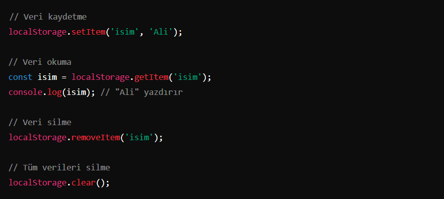

LocalStorage, tarayıcıda veri saklamak için kullanılan bir web API’sidir. Anahtar-değer çiftleri
şeklinde
veri depolar ve veriler tarayıcı kapatılsa bile kalıcıdır.
LocalStorage Nerede Kullanılır
Kullanıcı ayarları ve tercihleri
Form verilerini saklama
Oyun verileri
Hızlı erişim için küçük veri setleri
LocalStorage'nin Avantajları
Veriler kalıcıdır, tarayıcı kapatılsa bile saklanır.
Kolay kullanımlı bir API'ye sahiptir.
Büyük miktarda veri (genellikle 5-10 MB) saklayabilir.
LocalStorage Dezavantajları
Sadece metin verisi saklar; nesne veya dizi saklamak için JSON.stringify() ve JSON.parse() kullanmak
gerekir.
Veri boyutu sınırlıdır (genellikle 5-10 MB).
Tarayıcılar arası senkronizasyon yoktur; her tarayıcıda ayrı veri saklanır.
Eski Nesil Local Storage Kullanımı

setItem()
LocalStorage'a anahtar-değer çifti ekler veya var olan bir değeri günceller.
getItem()
LocalStorage'dan belirli bir anahtara karşılık gelen değeri alır.
removeItem()
Belirli bir anahtar ile ilişkilendirilmiş veriyi siler.